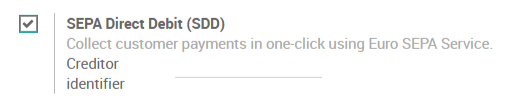
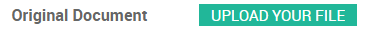
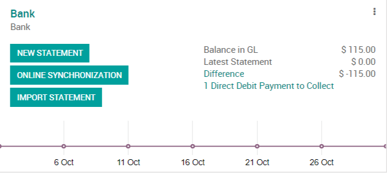
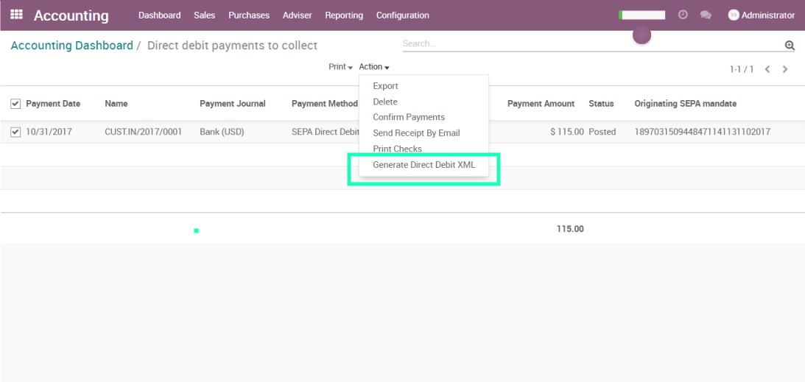

SEPA, the Single Euro Payments Area, is a payment-integration initiative of the European Union for simplification of bank transfers denominated in EURO. SEPA Direct Debit allows you to withdraw money from the bank accounts of your customers with their approval.
SEPA is supported by the banks of the 28 EU member states as well as Iceland, Norway, Switzerland, Andorra, Monaco and San Marino.
With Odoo, you can record customer mandates, generate an SDD XML file containing customer payments and upload it in your bank interface. The file follows the SEPA Direct Debit PAIN.008.001.02 specifications. This is a well-defined standard that makes consensus among banks.
Configuration
Go in and activate the SEPA Direct Debit (SDD) Feature. Enter the Creditor Identifier of your company. This number is provided by your bank.
Get paid with SEPA
Direct Debit Mandates
Before withdrawing money from a customer bank account, your customer has to sign a mandate. Go in and create a new mandate.

Tip
SEPA Direct Debit only works between IBAN Bank Accounts.
Once you have entered all the information in the customer mandate, you can print it and ask your customer to sign it. Once it is done, you can upload the mandate signed by your customer on the mandate in Odoo.
You can now validate the mandate.
Customer Invoices
Let's create an invoice for that customer.
When you will validate this invoice, the payment will be automatically generated and your invoice will be directly marked as paid.
Tip
If you already had some invoices for that customer that could be paid using that mandate, it's still possible to do it. Go on the invoice, click on register payment and choose the Sepa Direct Debit as payment method.
Generate SDD Files
You can generate the SDD File with all the customer payments to send to your bank directly from the accounting dashboard :
You select the payments in the list that you want to include in your SDD File, click on action and select "Generate Direct Debit XML".
You can now download the XML file generated by Odoo and upload it in your bank interface.
Tip
You can retrieve all the generated XML by activating the developer mode and going in .
Close or revoke a mandate
The Direct Debit mandate will be closed automatically once the end date defined on it is reached. However, you can close a mandate earlier than initially planned. To do that, simply go on the mandate and click on the "Close" button.The end date of the mandate will be updated to today's date. This means you will not be able to pay invoices with an invoice date superior to this end date. Be careful, once a mandate is closed, it cannot be reopened.
You can also revoke a mandate. In that case, you won't be able to pay any invoice using that mandate anymore, no matter the invoice date.To do that, simply go on the mandate and click on the "Revoke" button.